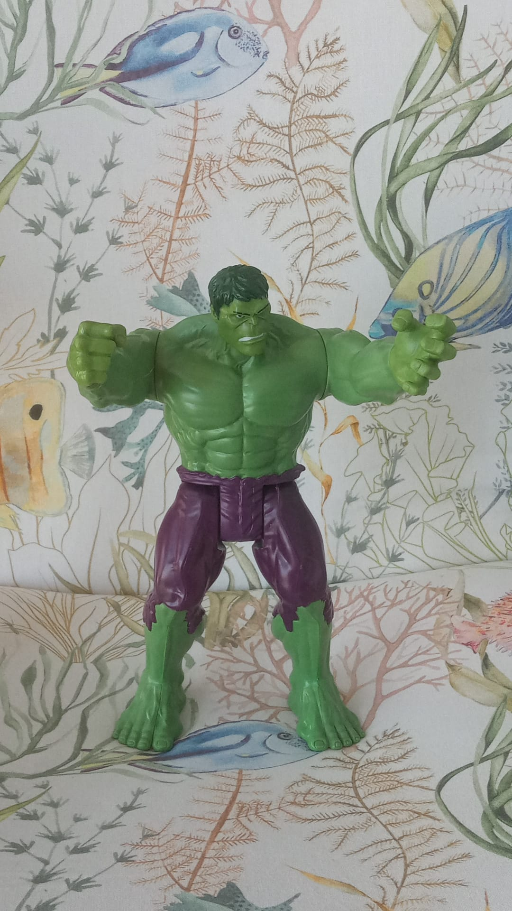

<div class="flex align-items-center justify-content-center m-auto sm:w-6 md:w-10 lg:w-6 xl:w-10">
  <div class="m-1 p-1 text-center">
    <h1>¿Qué es esto?</h1>
    <div class="about flex flex-column align-items-center justify-content-center">
      
      <p>
        ¡Hola!
        Esta es una aplicación en la que se pedía mostrar un catálogo en el que cada elemento tuviese su propia ficha con url y detalles propios a la vez que poder filtrar por las propiedades de cada elemento del catálogo.
        Para darle un toque personal, estuve buscando una api que contuviese mis heroínas de la infancia, como no encontré ninguna que me convenciese, creé el backend con una base de datos en la que estuviesen, además que permitiese añadir, editar o eliminar nuevos héroes desde el front(también hay un backup de esa bbdd por si algún usuario simpático la vaciase sin querer).
        Como soy nueva en Angular, he estado jugando y documentándome bastante sobre fantasías posibles, así llegué a Angular Material y PrimeFlex, con los que he maquetado y creado funcionalidades bastante chulas con pocas líneas de código (el buscador por ejemplo).   He explicado esto aquí por hacer un ReadMe un poco más serio.
      </p>
      <h2>Espero que os guste :D</h2>
    </div>
  </div>
</div>
